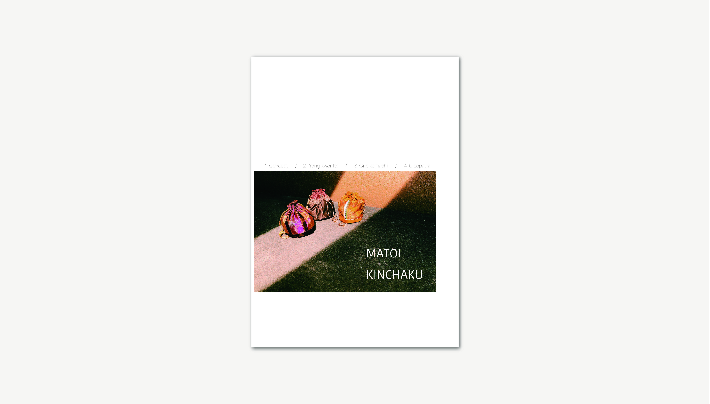

世界三大美女（仮）
情報環境デザイン学科 ２年
植地梨絵（ピッキン）
生活の中にありふれる「心地よさ」のなかで、私は特に夏に感じる心地よさが好きです。夏の暑さには嫌になることが多いですが、夏独特の暑さの中にある「ひんやり」という感覚に心地よさを感じます。夏になると喫茶店で頼みたくなる濃い緑色のクリームソーダ、暑いとき味方になってくれる冷えピタ、海に裸足で浸かったときに揺れる波、よく冷えた飲み物の中に入っているキラキラ光る氷の角張った様子の４種類の「ひんやり」をそれぞれ模様で表現しています。
